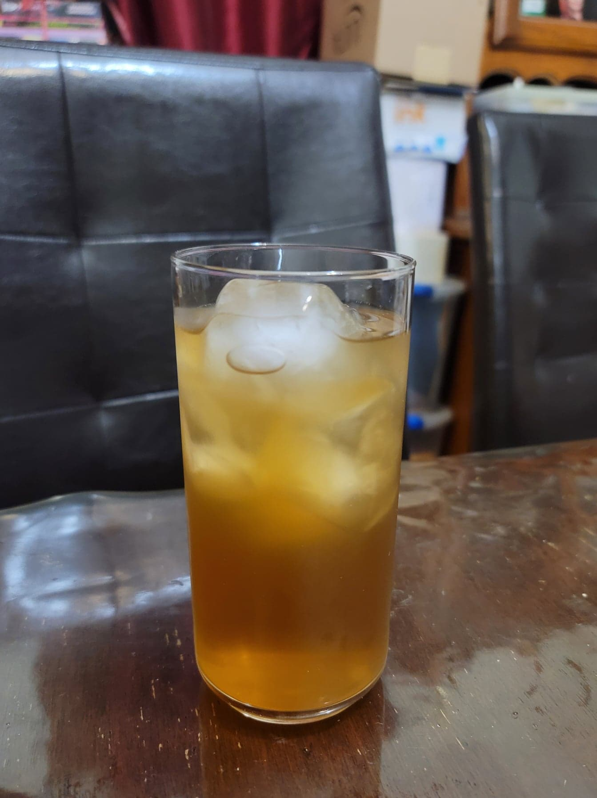

Winter Melon Iced Tea

Ingredients:
- 1000 g Winter melon, thinly sliced
- 150 g Brown sugar
- 50 g Rock sugar
- 300 g Water + more as needed
Instructions:
- Toss the winter melon in a large bowl with the brown sugar. Cover with plastic wrap and let it sit for 1 hour for the winter melon to absorb the sugar and release liquid.
- Transfer the winter melon and brown sugar into a pot with the rock sugar and water. Bring to a boil and then reduce to a simmer. Cover and let cook for 1 hour.
- Strain the contents of a pot through a sieve to remove all solids. Add cold water and ice as needed until sweetness is reduced to preference. Transfer to a fridge and serve cold over ice.